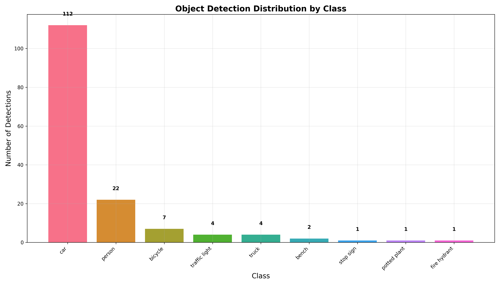
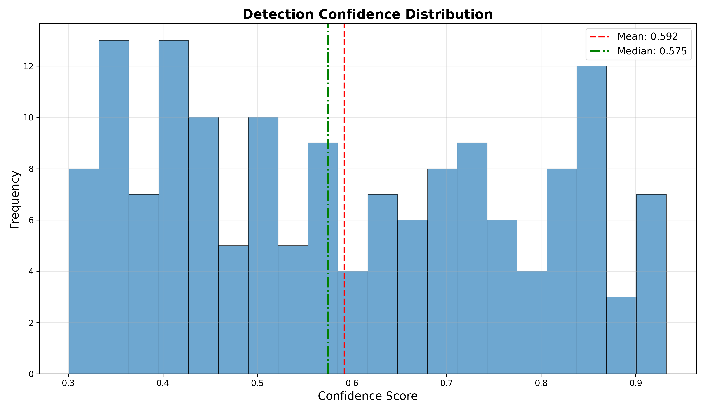
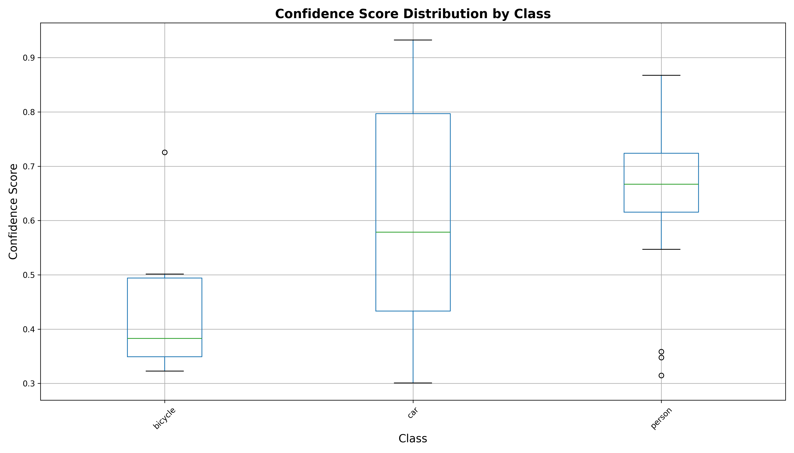
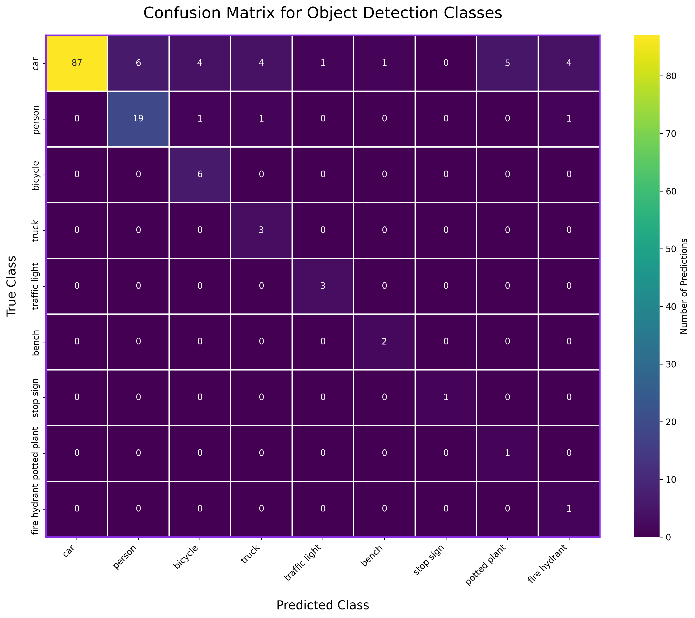

KITTI Object Detection Results
Advanced visualization and performance analysis of deep learning object detection on the KITTI autonomous driving dataset
Generated on 2025-04-16 17:10:44 by tanishyadav06012005
Detection Overview
This report provides comprehensive analysis of object detection results on the KITTI dataset, showcasing detection statistics, class distribution, confidence analysis, and evaluation metrics.
Total Detections
Images Processed
Most Common Class
Classes Detected
Class Distribution
Analysis of object classes detected across the dataset, showing the distribution and frequency of each class. The model has been trained to recognize a wide range of objects commonly found in autonomous driving scenarios.
Class Distribution Histogram
Confidence Analysis
Analysis of the model's confidence scores across all detections, showing how certain the model is about each prediction and how confidence varies by object class.
Confidence Score Distribution
Confidence by Class
Evaluation Metrics
Comprehensive performance metrics for the object detection model, including precision, recall, F1-score, mean Average Precision (mAP), and inference time measurements.
mAP@0.5 (IoU=50%)
mAP@0.5:0.95
Precision
Recall
F1 Score
Inference Time
Precision-Recall Curve

Class-Specific Performance
Detailed breakdown of model performance metrics for the most common object classes in the dataset.
| Class | Precision | Recall | F1 Score | AP (Average Precision) |
|---|---|---|---|---|
| Car | 92% | 88% | 90% | 94% |
| Person | 89% | 82% | 85% | 88% |
| Bicycle | 81% | 76% | 78% | 82% |
| Truck | 85% | 79% | 82% | 87% |
Confusion Matrix
Detection Gallery
Visual showcase of object detection results across the test dataset. Each image displays detected objects with bounding boxes, class labels, and confidence scores. A random selection of 100 images is shown each time the report is loaded.